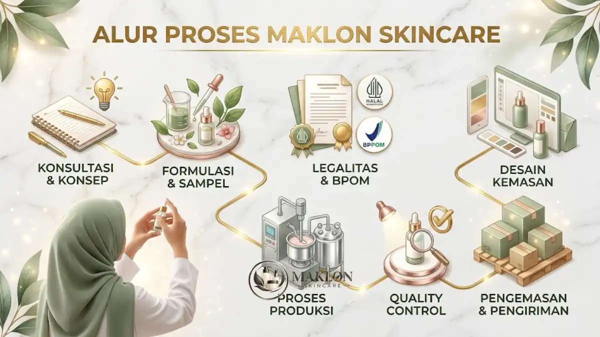
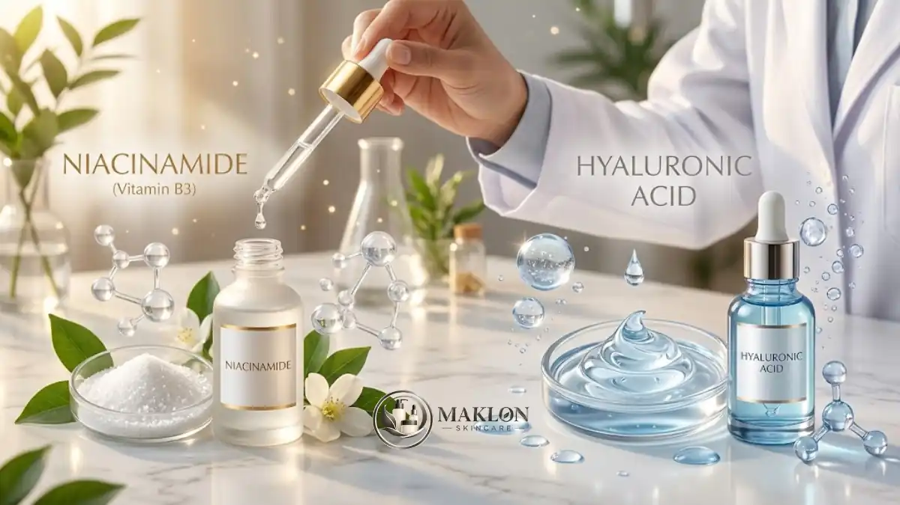

Maklon skincare adalah layanan produksi produk perawatan kulit oleh pabrik kosmetik untuk brand pemilik merek, sehingga pemilik brand tidak perlu membangun pabrik sendiri.
- Maklon skincare memungkinkan brand baru fokus pada merek, pemasaran, dan penjualan, sementara pabrik menangani formulasi dan produksi.
- Dua model utama adalah OEM (formula dari brand) dan ODM (formula dari pabrik).
- Biaya bergantung pada formula, bahan baku, kemasan, jumlah produksi, uji laboratorium, dan legalitas resmi.
- Produk skincare yang beredar di Indonesia wajib memiliki notifikasi BPOM, dan sejak 17 Oktober 2026 kosmetik wajib bersertifikat halal.
- Pemilihan bahan aktif dan pabrik yang bersertifikat CPKB menentukan keamanan dan reputasi brand.
Apa Itu Maklon Skincare?
Maklon skincare adalah kerja sama produksi di mana pabrik kosmetik membuat produk perawatan kulit atas nama brand klien. Pabrik memproduksi, brand memasarkan dengan mereknya sendiri.
Istilah maklon berasal dari kata makloon, yaitu jasa pembuatan barang berdasarkan pesanan. Dalam industri kosmetik, pihak pemesan disebut pemilik merek atau pemberi order.
Sementara itu, pihak yang memproduksi disebut pabrik maklon atau penerima maklon yang menyediakan fasilitas laboratorium dan mesin berstandar resmi.
Produk yang umum dimaklonkan meliputi serum, pelembap, pembersih wajah, toner, tabir surya, masker, dan produk perawatan tubuh.
Pemilik brand biasanya berasal dari pelaku UMKM, kreator konten, klinik kecantikan, hingga perusahaan yang ingin menambah lini produk kosmetik komersial.
Batasan penting perlu dipahami bersama. Maklon tidak menghapus tanggung jawab pemilik brand atas keamanan produk, kebenaran klaim, dan kepatuhan label.
Pabrik membantu proses produksi, tetapi merek yang beredar tetap menjadi tanggung jawab pemiliknya di mata konsumen serta regulator terkait.
Mengapa Maklon Skincare Banyak Dipilih Brand Baru?
Maklon skincare banyak dipilih karena menekan kebutuhan modal mesin, tenaga ahli formulasi, dan fasilitas produksi bersertifikat Cara Pembuatan Kosmetika yang Baik (CPKB).
Brand baru dapat meluncurkan produk lebih cepat dengan risiko awal lebih terkendali tanpa harus menanggung biaya operasional fasilitas manufaktur sendiri.
Industri kosmetik nasional sedang tumbuh dan persaingannya ketat. Berdasarkan data BPOM yang disampaikan Kementerian Perindustrian pada Mei 2026, terdapat 1.684 industri kosmetik di Indonesia.
Sekitar 85 persen di antaranya merupakan industri kecil dan menengah (IKM). Kemenperin juga menyebut nilai pasar kosmetik Indonesia pada 2025 mencapai sekitar 9,74 miliar dolar AS.
Keuntungan utama maklon bagi brand baru adalah sebagai berikut:
- Modal awal jauh lebih rendah dibanding membangun pabrik sendiri.
- Akses langsung ke tenaga formulator dan laboratorium pabrik profesional.
- Waktu peluncuran produk ke pasar (time to market) yang jauh lebih singkat.
- Fokus penuh tim internal pada branding, konten kreatif, dan saluran distribusi.
Kekurangannya juga nyata. Brand bergantung pada jadwal produksi pabrik, harus memenuhi jumlah pesanan minimum (MOQ), dan perlu mengawasi kualitas secara aktif.
Selain itu, kontrol atas formula juga lebih terbatas pada model tertentu sehingga pemilik merek harus cermat membaca kontrak kerja sama produksi.
Bagaimana Alur Kerja Maklon Skincare dari Awal sampai Produk Jadi?
Alur maklon skincare umumnya berjalan dari konsultasi konsep, formulasi dan sampel, uji stabilitas, pengurusan legalitas, produksi massal, hingga pengiriman produk jadi.
Durasi tiap tahap dapat bervariasi bergantung pada ketersediaan bahan baku, kecepatan persetujuan formulasi, dan proses verifikasi di instansi pemerintah.
Berikut tahapan yang lazim ditemui dalam industri maklon kosmetik:
- Konsultasi dan brief produk: Brand menyampaikan target pasar, jenis produk yang diinginkan, tekstur, klaim manfaat, dan alokasi anggaran awal.
- Formulasi dan sampel: Pabrik menyiapkan formula baru atau menawarkan formula siap pakai, lalu membuat sampel produk untuk dievaluasi oleh klien.
- Uji stabilitas dan keamanan: Sampel diuji di laboratorium untuk melihat ketahanan terhadap variasi suhu, perubahan warna, bau, pH, dan cemaran mikroba.
- Penyiapan kemasan dan label: Brand menyiapkan desain kemasan primer dan sekunder yang sesuai ketentuan regulasi pelabelan kosmetik.
- Pengurusan notifikasi BPOM dan sertifikasi halal: Dokumen formula, identitas produsen, dan label disiapkan sebelum produk mulai dijual secara bebas.
- Produksi massal: Pabrik memproduksi secara massal sesuai jumlah pesanan dan standar Cara Pembuatan Kosmetika yang Baik (CPKB).
- Pengecekan mutu dan pengiriman: Produk jadi diperiksa oleh tim Quality Control (QC) pabrik lalu dikirim langsung ke gudang brand.
Pemilik brand sebaiknya meminta jadwal tertulis untuk setiap tahap agar rencana pemasaran dan promosi dapat selaras dengan kesiapan stok barang.
Keterlambatan paling sering terjadi pada persetujuan sampel, keterlambatan pengadaan wadah kemasan, dan antrean pengurusan legalitas di instansi regulator.
Apa Perbedaan Model OEM dan ODM dalam Maklon Skincare?
OEM berarti pabrik memproduksi berdasarkan formula milik brand, sedangkan ODM berarti pabrik menyediakan formula dan pengembangan produk yang kemudian diberi merek klien.
Perbedaan mendasar antara kedua skema kerja sama tersebut terletak pada hak kepemilikan formula serta derajat kendali atas komposisi bahan baku.
Pada model OEM, brand membawa formula sendiri atau memesan formula khusus (custom), sehingga kendali atas komposisi dan keunikan bahan aktif jauh lebih besar.
Pada model ODM, brand memilih formula teruji yang sudah dikembangkan pabrik, sehingga proses registrasi lebih cepat dan biaya awal biasanya lebih ringan.
Pilihan tepat bergantung pada tujuan brand. Brand yang ingin diferensiasi kuat biasanya condong ke OEM, sedangkan brand yang ingin cepat masuk pasar sering memilih ODM.
Penjelasan lengkap, termasuk tabel perbandingan dan risiko hukum kepemilikan formula, tersedia di artikel perbedaan OEM dan ODM skincare.
Berapa Biaya Maklon Skincare?
Biaya maklon skincare tidak memiliki angka tunggal karena bergantung pada jenis formula, konsentrasi bahan aktif, pilihan kemasan, jumlah produksi, uji laboratorium, dan legalitas.
Pabrik kosmetik biasanya memberikan rincian penawaran harga per produk setelah brief formulasi dan target spesifikasi produk diterima secara menyeluruh.
Komponen biaya yang umum meliputi biaya pengembangan formula, harga bahan baku, ongkos produksi per batch, kemasan primer dan sekunder, uji mutu, pengurusan BPOM, sertifikasi halal, serta cetak label.
Jumlah pesanan minimum (MOQ) juga sangat memengaruhi harga per unit produk, di mana volume produksi yang lebih besar akan menghasilkan harga pokok yang lebih ekonomis.
Satu faktor eksternal layak diperhatikan. Kemenperin menyampaikan pada Mei 2026 bahwa bahan baku kosmetik nasional masih didominasi impor hingga sekitar 80 persen.
Akibatnya, harga bahan baku dapat dipengaruhi nilai tukar mata uang asing dan dinamika rantai pasok global. Rincian komponen biaya dan cara menghitung harga pokok produk dibahas di panduan biaya maklon skincare.
Apa Syarat BPOM dan Halal untuk Skincare Hasil Maklon?
Skincare yang dijual di Indonesia wajib melalui notifikasi kosmetika ke BPOM, dan sejak 17 Oktober 2026 produk kosmetik juga wajib memiliki sertifikat halal berdasarkan PP 42 Tahun 2024.
BPOM mengatur peredaran kosmetik melalui sistem notifikasi, bukan izin edar seperti obat-obatan medis sehingga verifikasi berkas difokuskan pada kepatuhan formula dan label.
Produk hanya boleh memakai bahan yang diizinkan, wajib diproduksi di fasilitas yang memenuhi standar CPKB, dan harus mencantumkan label informasi yang benar.
Mengenai kepatuhan halal, Badan Penyelenggara Jaminan Produk Halal (BPJPH) menyatakan produk kosmetik wajib bersertifikat halal setelah 17 Oktober 2026 sesuai mandat regulasi pemerintah.
BPJPH mencatat pada Mei 2025 sudah ada 81.343 produk kosmetik dalam negeri yang berhasil mengantongi sertifikat halal resmi dan aman beredar di masyarakat.
Pelaku usaha disarankan memastikan status halal bahan baku dan fasilitas pabrik sejak tahap awal riset. Persyaratan dokumen selengkapnya dibahas di panduan syarat BPOM skincare.
Apa Saja Bahan Aktif Skincare Populer yang Sering Dipakai dalam Formulasi?
Bahan aktif skincare populer meliputi niacinamide, hyaluronic acid, vitamin C, salicylic acid, retinol, ceramide, centella asiatica, dan peptide.
Setiap bahan memiliki fungsi fisiologis yang spesifik, batasan konsentrasi aman dari BPOM, serta profil kecocokan jenis kulit yang berbeda-beda bagi konsumen.

Berikut gambaran fungsi umum bahan aktif yang menjadi favorit pasar kecantikan:
- Niacinamide: membantu menjaga fungsi skin barrier, menyamarkan tampilan pori-pori, dan memberikan warna kulit yang lebih merata.
- Hyaluronic acid: senyawa humektan alami yang mengikat air sehingga kulit wajah senantiasa terasa kenyal dan terhidrasi optimal.
- Vitamin C (turunan asam askorbat): antioksidan poten yang sering dipakai untuk mencerahkan kulit serta melindungi dari stres oksidatif radikal bebas.
- Salicylic acid (BHA): eksfoliator kimia yang larut dalam minyak, sangat efektif membersihkan sumbatan sebum pada kulit berminyak dan berjerawat.
- Retinol: turunan vitamin A emas untuk perawatan tanda penuaan dini dan perbaikan tekstur kulit yang memerlukan penyesuaian dosis secara cermat.
- Ceramide: komponen lipid esensial yang memperkuat lapisan pelindung kulit dari iritasi dan mencegah dehidrasi trans-epidermal.
- Centella asiatica: ekstrak herbal penenang alami (Cica) yang banyak diaplikasikan pada produk khusus kulit sensitif dan meradang.
- Peptide: rantai asam amino aktif pembangun protein kolagen yang banyak diformulasikan dalam rangkaian perawatan antipenuaan premium.
Keamanan bahan aktif tidak boleh ditawar. BPOM, sebagaimana dikutip dalam pemaparan akademisi UGM pada November 2025, menarik lebih dari 100 produk kosmetik pada 2025.
Penarikan tersebut dilakukan karena produk terbukti mengandung bahan berbahaya terlarang seperti merkuri, hidrokuinon, dan asam retinoat tanpa resep medis.
Pemilik brand wajib memastikan formula bebas bahan berbahaya dan mematuhi batas penggunaan. Pelajari tren bahan aktif selengkapnya di artikel tren kandungan skincare 2026.
Bagaimana Cara Memilih Pabrik Maklon Skincare yang Tepat?
Pabrik maklon skincare yang tepat memiliki sertifikat CPKB, tim formulasi berpengalaman, transparansi bahan, jumlah pesanan minimum yang sesuai, serta kontrak yang jelas.
Lakukan verifikasi menyeluruh terhadap dokumen legalitas dan fasilitas fisik pabrik sebelum Anda menandatangani perjanjian kerja sama produksi resmi.
Gunakan parameter berikut untuk menilai kualitas dan kredibilitas calon pabrik maklon:
- Legalitas dan sertifikasi: pastikan memiliki Izin Usaha Industri Kosmetik, sertifikat CPKB yang masih aktif, dan komitmen fasilitas halal.
- Kemampuan R&D: tim formulator berpengalaman dalam menciptakan produk sejenis dan transparan menjelaskan mekanisme tiap zat aktif.
- Uji mutu lengkap: ketersediaan fasilitas uji stabilitas fisik, uji tantangan mikroba, dan pengujian kompatibilitas kemasan.
- MOQ dan jadwal: kesesuaian jumlah pesanan minimal dengan alokasi modal kerja serta komitmen ketepatan waktu pengiriman.
- Kerahasiaan dan hak formula: adanya klausul perjanjian kerahasiaan (NDA) serta ketegasan status kepemilikan formula kosmetik.
- Rekam jejak dan portofolio: reputasi pabrik dalam menangani brand kecantikan lain yang telah sukses beredar di pasar.
Kunjungi fasilitas pabrik bila memungkinkan dan minta sampel sebelum memesan dalam jumlah besar. Bandingkan minimal tiga pabrik agar penawaran dan layanan dapat dinilai secara objektif.
Apa Kesalahan Umum Saat Menjalankan Maklon Skincare?
Kesalahan umum dalam maklon skincare mencakup memilih pabrik hanya berdasarkan harga termurah, mengabaikan legalitas, tidak menguji sampel, membuat klaim berlebihan, dan tidak membaca kontrak kerja sama.
Mengetahui risiko kesalahan sejak awal akan melindungi modal bisnis Anda dari kerugian yang tidak terduga di tengah perjalanan operasional.
Beberapa kesalahan fatal yang sering dilakukan pebisnis pemula:
- Menjual produk sebelum surat notifikasi BPOM dan sertifikat halal resmi terbit secara sah.
- Memakai klaim hiperbolis seperti "pasti putih dalam sehari" yang menyesatkan dan melanggar kode etik periklanan BPOM.
- Tidak menanyakan daftar komposisi lengkap (INCI list) serta konsentrasi riil bahan aktif yang terkandung di dalam formula.
- Mengabaikan hak kepemilikan formula sehingga sulit memindahkan produksi ke pabrik lain di kemudian hari.
- Memesan jumlah stok produksi terlalu besar (overstock) sebelum respon dan permintaan pasar teruji secara organik.
- Mengabaikan masa simpan (PAO/kadaluwarsa) serta kondisi suhu penyimpanan ideal produk di gudang distributor.
Menghindari berbagai kekeliruan ini akan menekan risiko penarikan barang dari peredaran, sengketa hak kekayaan intelektual, dan potensi kerugian modal investasi.
Apa Tips Sukses Memulai Brand Skincare Lewat Maklon?
Tips utama memulai brand skincare lewat maklon adalah menentukan target konsumen lebih dulu, memulai dengan sedikit varian, memprioritaskan keamanan, dan membangun merek dengan edukasi yang jujur.
Strategi peluncuran yang matang akan meningkatkan peluang produk Anda untuk diterima pasar kecantikan yang sangat dinamis dan kompetitif.
- Tentukan masalah kulit spesifik yang ingin diselesaikan sebelum menentukan konsep formula kosmetik.
- Mulai dari satu sampai tiga produk inti (hero products) agar modal awal tidak terpecah ke banyak pos produksi.
- Lakukan uji coba panel pada kelompok konsumen kecil dan catat umpan balik mengenai tekstur, aroma, serta efektivitasnya.
- Siapkan anggaran matang untuk biaya legalitas dan perizinan, bukan hanya berfokus pada ongkos produksi fisik semata.
- Bangun kepercayaan pelanggan lewat transparansi bahan aktif dan klaim manfaat yang realistis serta terbukti secara ilmiah.
- Simpan seluruh arsip dokumen formula, surat kontrak produksi, dan catatan nomor batch secara tertata dan rapi.
Kesimpulan & Langkah Praktis
Maklon skincare adalah jalur praktis bagi brand baru untuk memiliki produk sendiri tanpa membangun pabrik. Keberhasilannya ditentukan oleh pemilihan model OEM atau ODM, kejelasan biaya, kepatuhan terhadap notifikasi BPOM dan sertifikasi halal, serta keamanan bahan aktif.
Langkah praktis yang dapat segera Anda lakukan: tentukan konsep produk, bandingkan minimal tiga pabrik bersertifikat CPKB, minta sampel dan penawaran tertulis, lalu pastikan seluruh perizinan legalitas selesai sebelum produk diperjualbelikan.
Untuk informasi regulasi resmi, rujuk situs Badan Pengawas Obat dan Makanan (BPOM) dan BPJPH Kemenag RI. Artikel ini bersifat informasi umum dan bukan nasihat hukum atau formulasi profesional.